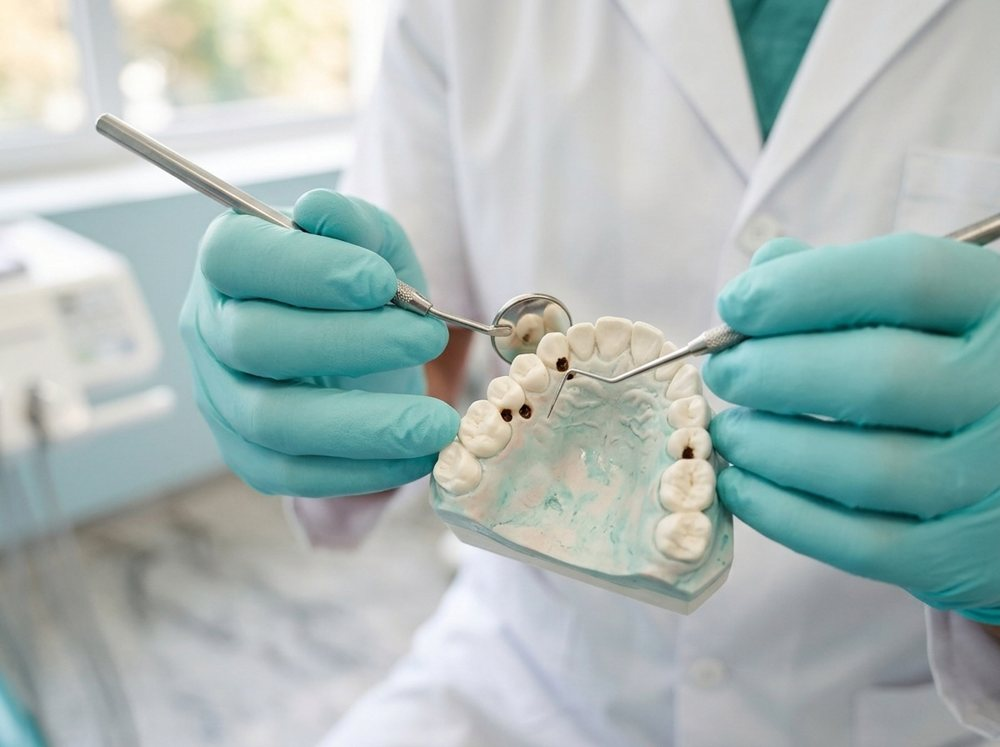
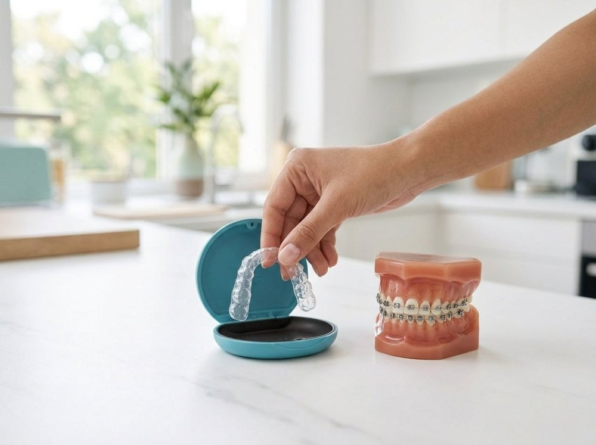
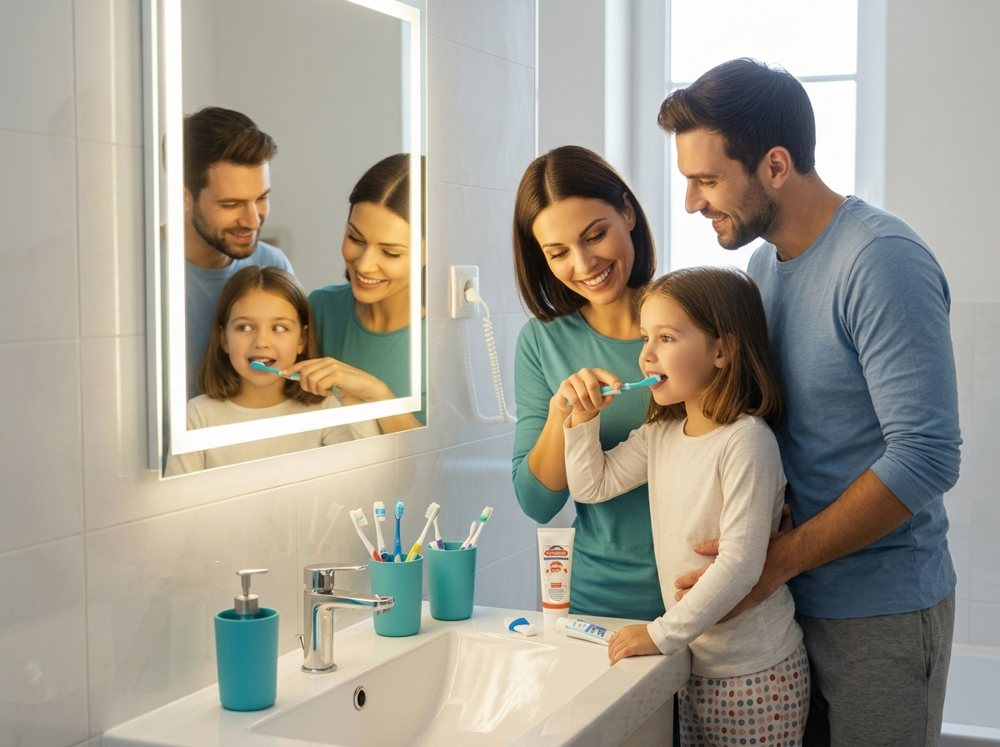
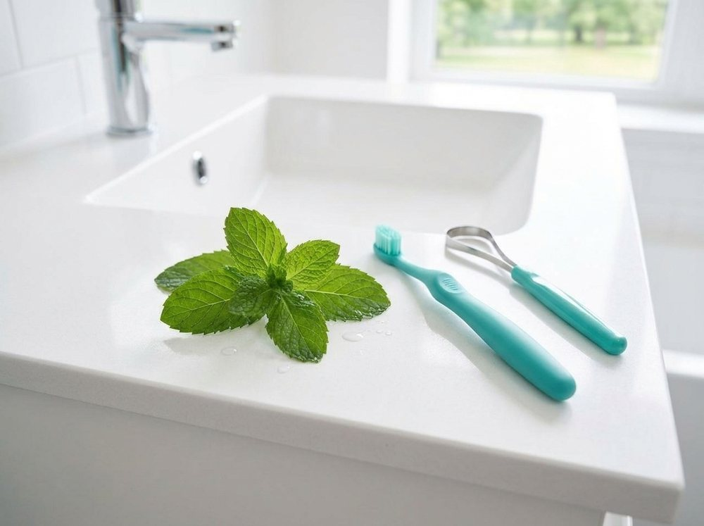

2xBrush daily for 2 minutes
1xFloss every day
6Months between checkups
3Months to replace a brush
Browse topics

Teeth
Tooth decay
Why cavities form and how fluoride, brushing and diet protect your enamel.
Gums
Gum disease
Bleeding gums are an early warning. Learn how cleaning and good habits reverse it.
Teeth
Tooth sensitivity
What causes pain with hot or cold food and which toothpastes help.

Teeth
Braces and aligners
Which option suits you, how long it takes and how to care for it.

Children
Children's oral health
From the first tooth to the first visit: simple habits for young smiles.

Care
Bad breath
Common causes and easy daily steps for fresher breath.
Gums
Replacing missing teeth
How implants work and what recovery looks like.
Care
Daily care routine
A simple morning and night routine backed by dentists.
See a dentist soon if you notice
- Tooth pain that lasts more than a day or two
- Gums that bleed, swell or pull away from teeth
- Swelling in the face or jaw, or a bad taste that will not go away
- A loose tooth or a chipped or broken tooth
- Ongoing sensitivity to hot or cold
Common questions
Brush twice a day for two minutes with fluoride toothpaste, and floss once a day.
Every six months for a checkup and cleaning, or sooner if you have pain or bleeding.
Supervised whitening is safe for most healthy adults. Your dentist checks your teeth first.
Around the first birthday, or when the first tooth appears.